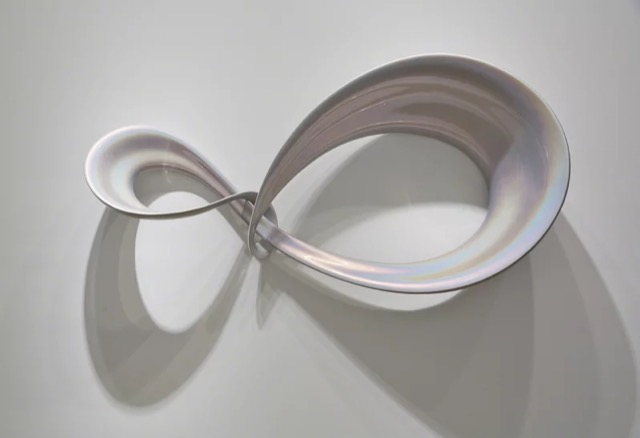
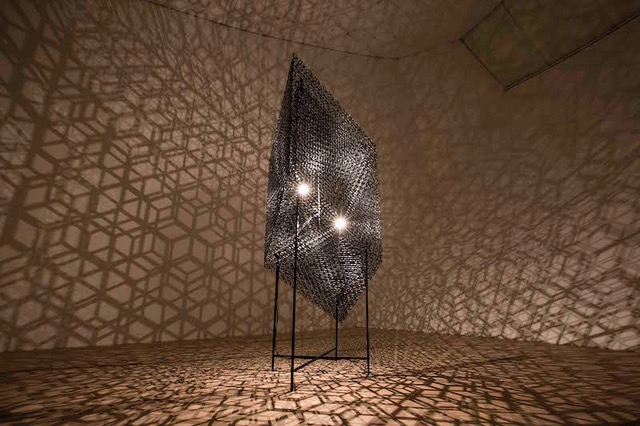
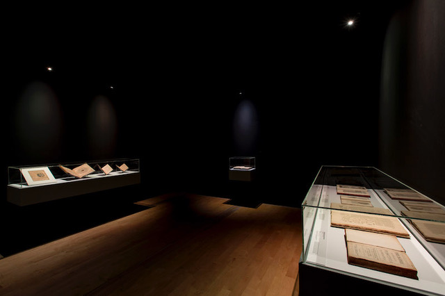
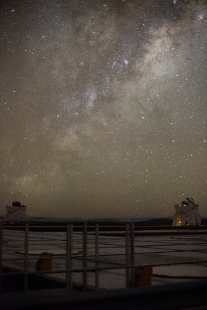
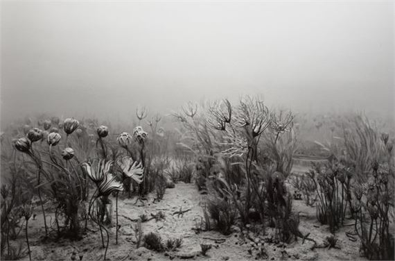

Whilst at ArtScience Museum, I co-curated The Universe and Art with Fumio Nanjo and Reiko Tsubaki of Mori Art Museum.
What do art and cosmology share? The Universe and Art proposed that they share a fundamental project: expressing the indescribable, understanding the incomprehensible, and observing the unseeable. Co-produced with Mori Art Museum and first presented in Tokyo in 2016 before opening at ArtScience Museum in Singapore, the exhibition brought together more than 120 artworks, scientific manuscripts, and artefacts to trace how humanity has imagined the cosmos across four millennia and across cultures.
The show spanned ancient star charts from 7th-century Japan and astronomical documents from Persia and the Arab world alongside first-edition texts by Copernicus, Galileo, Kepler, and Newton, shown in Singapore for the first time. More than 30 contemporary artists including Hiroshi Sugimoto, Wolfgang Tillmans, Conrad Shawcross, Mariko Mori, Trevor Paglen, Pierre Huyghe, and Andreas Gursky brought the exhibition into the present, responding to modern astrophysics, dark matter, and the vast structures revealed by contemporary telescopes.
The exhibition drew on my long-standing engagement with art and cosmology, rooted in my earlier practice as part of the artist duo r a d i o q u a l i a, which broadcast real-time signals from pulsars and planets as sound. It asked what changes when we look at the universe not only through instruments, but also through the eyes of artists.

Co-curators
Fumio Nanjo · Reiko Tsubaki (Mori Art Museum) · Honor Harger (ArtScience Museum)
Artists include
Jia Aili · Björn Dahlem · Laurent Grasso · Andreas Gursky · Pierre Huyghe · Mariko Mori · Trevor Paglen · Patricia Piccinini · Conrad Shawcross · Hiroshi Sugimoto · Wolfgang Tillmans · and 20+ further artists
Presented by
Mori Art Museum, Tokyo · ArtScience Museum, Singapore




